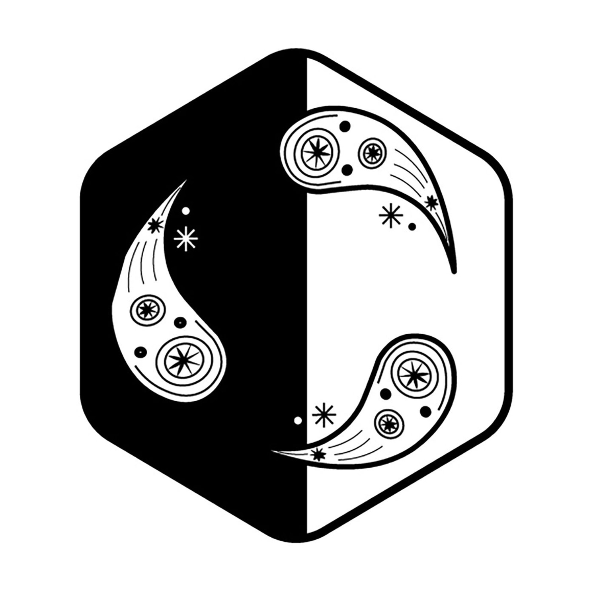

<!DOCTYPE html>
<html lang="en">
  <!DOCTYPE html>
<html>
<head>
  <title></title>
  <link rel="shortcut icon" type="image/png" href="assets/personal-logo/shon-akhrorov-personal-logo3.png">
  </head>
</html>
  <head>
  <title>Free Creative Portfolio Template: Feb 2024 Version | Project Page</title>
  <meta name="description"
    content="When writing a meta description, keep it between 140 and 160 characters so Google can display your entire message. Don’t forget to include your keyword!">
  <meta charset="utf-8">
  <meta name="viewport" content="width=device-width, initial-scale=1.0">
  <link rel="stylesheet" href="https://cdnjs.cloudflare.com/ajax/libs/meyer-reset/2.0/reset.min.css">
  <link rel="stylesheet" href="https://cdnjs.cloudflare.com/ajax/libs/font-awesome/5.15.4/css/all.min.css">
  <link rel="stylesheet" href="./styles/style.css">
</head>

<body class="project-2">
  <header class="hero-header">
    <ul class="branding-navigation">
      <li><a href="work.html" class="custom-navigation">Work</a></li>
      <li class="logo"><a href="index.html"></a></li>
      <li><a href="about.html" class="custom-navigation">About</a></li>
    </ul>
  </header>
  <div class="project-wrapper">
    <aside class="project-aside">
      <div class="project-info">
        <h1 class="project-title">Uzbek Duppi</h1>
        <p class="project-description">Traditional Uzbek duppi, also known as tubeteika or doppi, is a distinctive skullcap worn by men in Uzbekistan and other Central Asian countries. It is typically made of cotton or silk fabric and is adorned with intricate embroidery, often featuring geometric patterns or floral designs. Duppi serves both as a fashion accessory and a symbol of cultural identity, often worn on special occasions or as part of traditional attire. The design and style of duppi can vary depending on the region and the occasion, with some being more ornate and elaborate than others.</p>
      </div>
      <ul class="project-navigation">
        <li class="arrow"><a href="p4-golden-samarkand.html" class="navigation-arrow"><i class="fas fa-arrow-left fa-2x"></i></a>
        </li>
        <li class="arrow"><a href="p1-magazine-covers.html" class="navigation-arrow"><i class="fas fa-arrow-right fa-2x"></i></a></li>
      </ul>
    </aside>
    <main class="project-details">
      <div class="project-image"></div>
  </div>
  <ul class="global-footer">
    <li class="footer-item-1">
      <h2>About Me</h2>
      <p>Hey there, welcome to my website!</p>
      <p>I'm Shekhroz Akhrorov, and I'm thrilled you're here.</p>
        <p>I'm a teacher, cook, athlete, artist, linguist, and a designer. I adore learning new languages, new places, new people. I have been working as a language instructor for 8 years and I strongly feel that teaching will be a part of my future career.</p>
        <p>At the same time, I have huge interests in preserving the nature and am always ready to get my hands on to maintain greenness. I love planting trees and I've planted over 18000 trees so far, so it is my an always-come-back activity of all times🌱</p>
        <p>Besides, I like creating things like websites, designs, films. Although I am not professional in working with websites, I happened to find strong interests in me about it and I surely will keep pushing the boundries.</p>
        <p>This website is where I share my passions and adventures. From heartfelt designs to random pictures, it's all here.</p>
        <p>Warmly,</p>
        <p>Shekhroz.</p>
    <li class="footer-item-3">
      <h2>Contact &amp; Social</h2>
      <ul class="socials-list">
        <li class="social-item"><a href="https://wordpress.com/view/shekhrozakhrorov.com/" target="_blank">Personal Website</a></li>
        <li class="social-item"><a href="https://www.linkedin.com/in/shekhroz-akhrorov-5690672ba/" target="_blank">LinkedIn</a></li>
        <li class="social-item"><a href="https://codepen.io/shonmacca" target="_blank">CodePen</a></li>
        <li class="social-item"><a href="https://www.instagram.com/sheyhraz_/" target="_blank">Instagram</a></li>
        <li class="social-item"><a href="https://www.facebook.com/profile.php?id=100088438343501" target="_blank">Facebook</a></li>
        <li class="social-item"><a href="https://telegram.com/shekhrozs_bot/" target="_blank">Telegram</a></li>
        <li class="social-item"><a href="https://web.whatsapp.com/" target="_blank">WhatsApp</a></li>
        <li class="social-item"><a href="https://twitter.com/Shekhroz611104" target="_blank">Twitter</a></li>
      </ul>
    </li>
    <li class="footer-item-4">
      <p><a href="#top">Smooth scroll to the top</a></p>
      <p class="fineprint">&copy; 2024. Hand crafted with <span class="heart">❤</span> + Flexbox + CSS Grid by
        Shekhroz Akhrorov.</p>
    </li>
  </ul>

  <div id="myID" class="bottomMenu hide"><a href="project-1.html">Previous Project</a></div>

  <script type="text/javascript">
    myID = document.getElementById("myID");

    var myScrollFunc = function () {
      var y = window.scrollY;
      if (y >= 800) {
        myID.className = "bottomMenu show"
      } else {
        myID.className = "bottomMenu hide"
      }
    };

    window.addEventListener("scroll", myScrollFunc);
  </script>
</body>

</html>